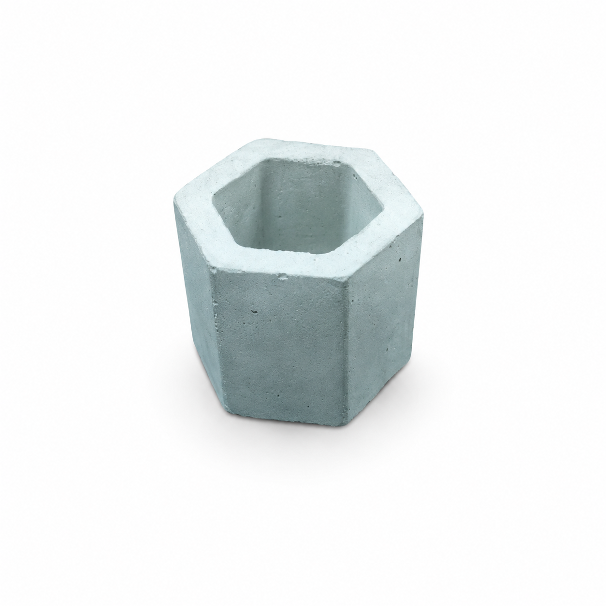

Esta maceta fue elaborada artesanalmente en cemento, con un diseño geométrico hexagonal que le brinda un estilo moderno y minimalista. Su estructura resistente la hace ideal para pequeñas plantas o suculentas, combinando funcionalidad y decoración.
El proyecto demuestra cómo materiales simples pueden transformarse en objetos útiles y estéticos mediante técnicas de moldeado y acabado artesanal.
La maceta combina funcionalidad con un diseño moderno, permitiendo decorar distintos espacios mientras brinda un recipiente resistente para el cultivo de pequeñas plantas.
Con este trabajo se busca fomentar la creatividad, el aprendizaje de técnicas artesanales y la valoración del trabajo manual, demostrando que es posible crear productos de calidad a partir de materiales sencillos.